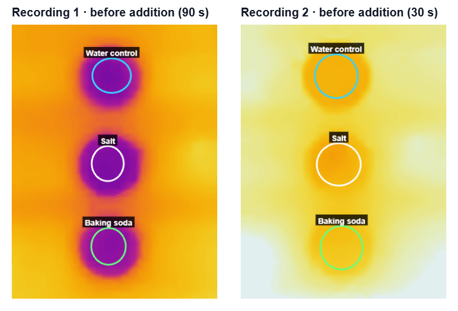

Can AI be a good lab partner?
We showed an AI agent a photo of salt, baking soda, and three dishes. It designed an experiment, read our thermal recordings, caught mistakes, ours and its own, and wrote the lab report.
Most school experiments begin with a lab manual. Someone has already decided what to mix, what to measure, and what the answer should be. The manual leaves out the parts of science that take scientists the most time: working out what experiment the things at hand allow, finding out why a result did not match the prediction, and writing down what the data show and what they do not. A good lab partner helps with all three.
The Experiments section of Infrared Explorer gives that role to an AI agent. A student photographs the materials on the table, and the agent designs an experiment for them. The student does the experiment by hand and records it with a thermal camera. The agent reads the recording with programs it writes itself, discusses the result, and writes a lab report. The agent never touches the bench: all it knows about the experiment comes through the camera and the conversation.
This article follows one experiment from the first photo to the final report: two powders from a kitchen, three dishes of water, two recordings, and a first result that contradicted the prediction. The agent ran on OpenAI's GPT-6 Luna. The window below is the experiment itself: the conversation is on the left, and the plan, the captures, and the report are in the tabs on the right.
The experiment on the web. Scroll the conversation on the left, and open Plan, Captures, or Report on the right.
From a photo to a plan
We put a mug, a canister of table salt, a box of baking soda, and three glass Petri dishes on a table, took a photo of them in the app (Figure 1), and typed one sentence:
What experiment can I do using these materials?

In under two minutes the agent had named the experiment “Cooling When Powders Dissolve,” drawn the setup (Figure 2), and written a plan in three parts: question and prediction, setup, and recording. Every item in the photo got a job: a dish of plain water as the control, a dish for each powder, and “The mug can help pour the water.”

The plan made a prediction with numbers in it. Both powders take in heat as they dissolve, so both dishes should cool: “roughly a few tenths of a degree for salt and perhaps around 0.5–1.5 °C for baking soda at the water surface.” The plan also said what would count as a failed prediction: “If both treated dishes track the control, or warm instead, the predicted cooling was not resolved.” And it named a weakness in its own design before we did: “the same spoon volume is a practical comparison, not an equal mass.” The plan stays at hand in the app's camera while recording.
Reading the recording
We filled the three dishes with water and pointed a FLIR ONE Edge Pro straight down at them. We recorded a time-lapse of 38.5 minutes at one frame every 3 seconds, 771 frames in all, and marked a reading area on each water surface (T1, T2, and T3 in Figure 3). About 100 seconds in, we tipped a scoop of salt into the middle dish and an equal scoop of baking soda into the bottom dish. The plan said to stir each for 10 seconds. We did not stir.


Figure 3: The first run 105 s in, seen in visible light (left) and infrared light (right). Top to bottom: plain water, water with salt, water with baking soda. The baking soda lies in a white heap on the bottom of its dish. The colors run from 18.2 °C (dark) to 23.2 °C (white).
When the recording was added to the experiment, the agent went to work without being asked. It called up thermal and visible-light frames at nine moments of its choosing, and it wrote a short program that read the temperature inside the three reading areas through the recording. Without being told, it worked out that the top dish was the control, the middle one salt, and the bottom one baking soda, and that the powders went in “between about 90 and 105 seconds.”
It also dealt with a problem in the data that we had not mentioned. A thermal camera closes its shutter from time to time to recalibrate, and ours did so 44 times during the recording. Each time, every reading in the frame dipped by about 1 °C and came back. “The readings jump at several points because the camera recalibrated,” the agent wrote, “so the simultaneous differences between dishes are more useful than their raw changes alone.” Its second program left out the frames within 6 seconds of a recalibration and subtracted the control's reading from each powder dish's reading in the same frame. Figure 4 is the chart that program drew.

All three water surfaces started at about 19.8 °C. Between 5 and 15 minutes the salt dish read about 0.8 °C below the control and the baking soda dish about 0.7 °C below, and by the end both had crept back to about 0.2 °C below. The agent said plainly what that meant for its own prediction: the result “does not support the prediction that baking soda would cool more.”
The first recording. Press Play, move a thermometer, or open the Charts tab for the temperature curves.
Arguing about a tie
The analysis had one thing wrong. The agent had assumed that we followed its plan. It wrote that the powders were “added and stirred,” and it counted the unstirred control as a flaw in our procedure. We corrected it, and then it corrected us.
Thanks for clarifying—I misread the setup. You used equal-volume scoops, and none of the dishes was stirred. I shouldn’t have implied the treatments were stirred or treated the unstirred control as a mismatch.
That makes this a comparison of adding equal volumes of powder without stirring. The thermal data still show both treated dishes cooler than the water-only control, with the largest difference several minutes later and a gradual return toward the control. Because the powders weren’t stirred, they may have dissolved more slowly or unevenly, so the camera’s surface readings may not represent the temperature throughout each dish.
Equal-volume scoops are a fair comparison for that practical question, though they need not contain equal masses of salt and baking soda. The result still suggests cooling in both powder dishes; the small difference between them isn’t enough to confidently say which powder cools more.
There is a small difference in your capture: the salt dish read slightly cooler than the baking-soda dish during much of the period when both were coolest—only about a tenth or two of a degree, though. That’s a weak result, not a clear demonstration that salt cools more.
Chemically, both dissolutions absorb some heat from the water. In dilute water, baking soda’s heat absorbed per mole is larger—about 18.7 kJ/mol, compared with roughly 4.2 kJ/mol for table salt—so with equal moles fully dissolved, you’d expect baking soda to cool more. (oecd-nea.org) But equal-volume scoops don’t guarantee equal masses or equal numbers of moles.
Since you didn’t stir, the powders may also have dissolved at different rates, and the surface the camera reads may not have matched the temperature deeper in each dish. Those factors, plus heat flowing between the dishes, water, and surroundings, can make the surface readings look similar even when the dissolving processes differ. So the best reading of this take is: both mixtures became cooler than the control, but it doesn’t reliably tell us which powder caused more cooling.
Your equal-volume scoops were valid for comparing “one scoop of each.” To make the contrast clearer, I’d focus on getting more of each powder dissolved and capturing the first few minutes—not simply adding a heap more powder.
For a repeat:
Keep the baking-soda amount below what can dissolve: at about 20 °C, its solubility is roughly 9.3 g per 100 mL of water, so extra powder beyond that may remain undissolved rather than increase the cooling. (inchem.org) In dilute water, baking soda’s dissolution absorbs more heat per gram than salt’s, so an equal-mass comparison should make a difference easier to interpret; the actual temperature gap will depend on how much dissolves and how quickly heat enters from the dish and surroundings. (oecd-nea.org)
Three exchanges about the first run, as they appear in the experiment on the web.
In the first exchange the agent accepts a correction. In the second it refuses one: we said there was no difference, and it would agree to no more and no less than the data showed. Then it looked up the chemistry, with its source, to say what the data should have shown. The third answer is a redesign of the experiment, down to a limit we would not have thought to check: how much baking soda the water can dissolve at all.
The second run
We ran the experiment again with the same three dishes, this time at one frame per second for 10 minutes. The powders went in about 35 seconds after the start. We stirred both powder dishes with sticks and left the control alone (Figure 5).


Figure 5: The second run 120 s in, seen in visible light (left) and infrared light (right). The stirred baking soda dish at the bottom is now the coldest by far; the lighter streak inside it is the stirring stick. The colors run from 19.6 °C (dark) to 24.8 °C (white).
Again the agent looked before it measured. “The visible frames show stirrers in both treated dishes beginning around 40 seconds,” it reported. It also caught something in the first 30 seconds: “before the additions, the baking-soda dish already read about 0.5 °C warmer than the control.” Left alone, that offset would have hidden half a degree of cooling, so its program measured each dish from its own starting temperature before comparing it with the control.
This time the two powders separated within a minute. From two to five minutes after the powders went in, the baking soda dish read about 2.3 °C below the control and the salt dish about 0.6 °C below, a ratio of about four to one. The agent did not call the question settled: “one run can’t establish a repeatable difference—and it shows surface cooling, not necessarily temperature throughout the liquid.”
The second recording. Press Play to watch the baking soda dish at the bottom turn cold within a minute of the stirring.
Writing the report, and rewriting it
When we asked for a report, the agent wrote one in under two minutes: five sections, from question and prediction to conclusion, with figures it made itself. It also checked its own work. One of its charts cut off the bottom of the baking soda curve, and it redrew the chart without being asked.
It did not catch everything. The same report said of the second run that “neither dish was stirred.” The agent had carried our correction about the first run over to the second. The sentence stayed in the report until we asked for something else:
Add a comparison of the two recordings to the report with two separate charts, one for each recording, explain why the results differ.
The agent went back to both recordings. It looked at the frames again and put the two thermal views side by side on one color scale, with the reading areas labeled (Figure 6). It ran one analysis on both recordings, set time zero at the moment the powders went in, and drew the two charts on the same axes (Figure 7). The new report said, correctly, that in the second run both powder dishes were stirred “from about 40 seconds.”



Figure 7: The two charts in the final report, on the same axes: each powder dish's change from its own starting temperature, minus the control's change, against time from the moment the powders went in. Left: the first run, not stirred. Right: the second run, stirred.
The rewrite brought a new mistake, and this time the agent found it without us. Its first draft said that the frames of the first recording “do not show spoons, stirrers, or when ingredients were added.” It then changed its own sentence: “Its visible frames show the powders being added at about 102 seconds; no stirring is visible afterward.” In a third pass it added a second difference between the runs that had not come up before: before the powders went in, the water was about 3.5 °C warmer in the second run.
The conclusion of the report claims no more than two single runs allow:
The clearest procedural difference visible in the recordings is stirring in Recording 2 but not Recording 1, which could explain why cooling was more quickly and strongly separated there, though other run-to-run differences remain possible.
What the agent missed
The plainest evidence for why the first run ended in a tie is in Figure 3, and the agent never mentioned it. The baking soda lies in a white heap on the bottom of its dish. The agent had called up that frame. It gave the general reason, that powders left unstirred may dissolve slowly, but it did not point at the heap.
The chemistry is why the heap matters. Pulling ions out of a crystal costs energy, and water molecules pay part of it back as they gather around each freed ion. For both powders the cost is larger than the payback, and the water makes up the difference by cooling. By the agent's own numbers, baking soda takes about three times as much heat per gram as salt (18.7 kJ for 84 g against 4.2 kJ for 58 g). But only the powder that dissolves takes any heat, and baking soda is about a quarter as soluble as salt. A heap of it in still water sits in a thin layer that is nearly saturated. Water is also opaque to the long-wave infrared light that the camera sees, so the camera reads only the top skin of the water. Stirring brought fresh water to the grains and brought the cold water up to where the camera could see it.
Each run was done once, and two things changed between them, as the agent said itself. And a report that was wrong about our own procedure was fixed only because we asked for something else. The agent reads the data critically. A student has to read the agent the same way.
What the Agent Did
- Design — from one photo and one sentence, a title, a drawing of the setup, and a three-part plan with a numerical prediction, in under two minutes.
- Analysis — eight programs of its own that read about 2,600 frames of temperature data, with 44 camera recalibrations screened out and a 0.5 °C starting offset removed.
- Corrections — one of its misreadings corrected by us, one overstatement of ours corrected by the agent, and two of its own errors corrected by itself. One wrong sentence stayed in the report until we asked for a rewrite, and the heap in Figure 3 was never mentioned.
- Result — not stirred, both powder dishes read about 0.8 °C below the control; stirred, the baking soda dish read about 2.3 °C below it and the salt dish about 0.6 °C.
- Report — five sections and three figures made from the data, rewritten on a one-sentence request.
Conclusion
This article uses two kitchen powders to illustrate a new way to learn science in the real world: students show an AI agent what is on the table and do the experiment with their own hands, and the agent reads the thermal recording and hands back measured data, an argument, and a report. Was it a good lab partner? In this experiment it was. It turned a photo into an experiment with a prediction that could fail, held to the data when we overstated the result, gave way when we knew our own procedure better, and corrected its own report twice. Its work still had to be checked, like the work of any lab partner.
A thermal camera gave students thousands of thermometers where they once had one, a step from sensing to imaging. An AI agent that can read what those thermometers record takes the next step, from imaging to reasoning. By pairing the two, Infrared Explorer turns a student's curiosity about the ordinary things on a table into a genuine scientific investigation, wrong turns included.
← Back to Infrared Explorer